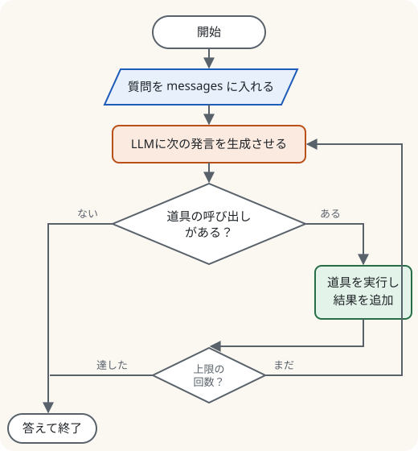

第6部 LLMをシステムにする · 第23章
道具を使わせる：エージェント
LLMに電卓と検索を渡し、自分で考えて使わせる
おすすめは「ページを読みながら、コードを自分のノートブックに1セルずつ貼って実行」。完成ノートは困ったときの答え合わせ用です。
つくるもの
電卓・学校資料の検索・今日の日付の3つの道具を、LLMが自分で選んで使う「ボンゴ情報専門学校の案内エージェント」
ついでに身につく理論
- ツール呼び出し（function calling）の仕組み
- 道具の説明はJSONスキーマとしてプロンプトに入る
- エージェントのループ（フローチャート）
- ReAct：考える→行動→観察
- 安全性：権限・許可リスト・プロンプトインジェクション・人の確認
- MCP（道具をつなぐ共通の約束）
新しく使うPython
- 型ヒントとdocstringで関数を説明する
astで安全に式を計算する- 正規表現と
json.loadsで出力を読み取る whileループと上限回数

ミナト
LLMが電卓を使うって、どうやって？ LLMには手がないですよね。

ボンゴ先生
手はないが、口はある。LLMに「電卓を使いたいときは、こういう形式で書いてね」と教えておく。LLMがその形式で「電卓：123×456」と書いたら、プログラム（キミのPython）が代わりに電卓を叩いて、結果をLLMに返す。LLMは司令塔、Pythonは手足。チームプレーだね。
準備：少し大きめのモデル
道具を使うには、指示を正確に守る力が必要なので、0.5Bより一回り大きい Qwen2.5-1.5B-Instruct（float16で約3GB）を使います。GPUのランタイムで実行してください。
!wget -q https://raw.githubusercontent.com/sakunokyumei/llm-research-textbook/main/code/rag_docs.jsonl
import ast, json, operator, re, datetime
import torch
from transformers import AutoTokenizer, AutoModelForCausalLM
device = "cuda" if torch.cuda.is_available() else "cpu"
name = "Qwen/Qwen2.5-1.5B-Instruct"
tok = AutoTokenizer.from_pretrained(name)
llm = AutoModelForCausalLM.from_pretrained(name, dtype=torch.float16 if device == "cuda" else torch.float32).to(device)
print("準備完了")準備完了道具を作る
道具は、ふつうのPythonの関数です。ただし、LLMが「この道具は何をするのか」を理解できるように、型ヒントと**説明（docstring）**をきちんと書きます。
OPS = {ast.Add: operator.add, ast.Sub: operator.sub, ast.Mult: operator.mul,
ast.Div: operator.truediv, ast.Pow: operator.pow, ast.USub: operator.neg}
def calculator(expression: str) -> str:
"""四則演算の式を正確に計算する。
Args:
expression: 計算したい式。例：'123*456' や '(3+4)/2'
"""
def ev(node):
if isinstance(node, ast.Constant) and isinstance(node.value, (int, float)):
return node.value
if isinstance(node, ast.BinOp) and type(node.op) in OPS:
return OPS[type(node.op)](ev(node.left), ev(node.right))
if isinstance(node, ast.UnaryOp) and type(node.op) in OPS:
return OPS[type(node.op)](ev(node.operand))
raise ValueError("数字と + - * / ** ( ) 以外は使えません")
try:
expression = expression.replace("×", "*").replace("÷", "/")
return str(ev(ast.parse(expression, mode="eval").body))
except Exception as e:
return f"エラー：{e}"
docs = [json.loads(l) for l in open("rag_docs.jsonl", encoding="utf-8")]
def search_school(query: str) -> str:
"""ボンゴ情報専門学校の資料から、質問に関係する文章を探す。
Args:
query: 調べたいこと。例：'学食の人気メニュー'
"""
grams = lambda s: {s[i:i + 2] for i in range(len(s) - 1)}
q = grams(query)
best = sorted(docs, key=lambda d: -len(q & grams(d["title"] + d["text"])))[:2]
return "\n".join(f"[{d['id']}] {d['text']}" for d in best)
def today() -> str:
"""今日の日付を返す。"""
return datetime.date.today().isoformat()
tools = {"calculator": calculator, "search_school": search_school, "today": today}
print(calculator("123*456"), calculator("(3+4)/2"), calculator("__import__('os')"))56088 3.5 エラー：数字と + - * / ** ( ) 以外は使えません道具の説明は、プロンプトに入る
apply_chat_template に tools= で関数のリストを渡すと、関数の型ヒントとdocstringから、道具の説明書（JSONスキーマ）が自動で作られ、プロンプトの中に書き込まれます。LLMが実際に何を読んでいるのか、見てみましょう。
messages = [{"role": "user", "content": "123×456はいくつ？"}]
prompt = tok.apply_chat_template(messages, tools=list(tools.values()), add_generation_prompt=True, tokenize=False)
print(prompt)<|im_start|>system
You are Qwen, created by Alibaba Cloud. You are a helpful assistant.
# Tools
You may call one or more functions to assist with the user query.
You are provided with function signatures within <tools></tools> XML tags:
<tools>
{"type": "function", "function": {"name": "calculator", "description": "四則演算の式を正確に計算する。", "parameters": {"type": "object", "properties": {"expression": {"type": "string", "description": "計算したい式。例：'123*456' や '(3+4)/2'"}}, "required": ["expression"]}, "return": {"type": "string"}}}
{"type": "function", "function": {"name": "search_school", "description": "ボンゴ情報専門学校の資料から、質問に関係する文章を探す。", "parameters": {"type": "object", "properties": {"query": {"type": "string", "description": "調べたいこと。例：'学食の人気メニュー'"}}, "required": ["query"]}, "return": {"type": "string"}}}
{"type": "function", "function": {"name": "today", "description": "今日の日付を返す。", "parameters": {"type": "object", "properties": {}}, "return": {"type": "string"}}}
</tools>
For each function call, return a json object with function name and arguments within <tool_call></tool_call> XML tags:
<tool_call>
{"name": <function-name>, "arguments": <args-json-object>}
</tool_call><|im_end|>
<|im_start|>user
123×456はいくつ？<|im_end|>
<|im_start|>assistantLLMの「道具を使いたい」を読み取る
def generate(messages):
inputs = tok.apply_chat_template(messages, tools=list(tools.values()), add_generation_prompt=True,
return_tensors="pt", return_dict=True).to(device)
out = llm.generate(**inputs, max_new_tokens=200, do_sample=False, pad_token_id=tok.pad_token_id)
return tok.decode(out[0][inputs["input_ids"].shape[1]:], skip_special_tokens=True)
def parse_tool_calls(text):
calls = []
for block in re.findall(r"<tool_call>(.*?)</tool_call>", text, re.S):
try:
calls.append(json.loads(block))
except json.JSONDecodeError:
pass # 形式が崩れていたら無視する
return calls
reply = generate(messages)
print("LLMの返事：", reply)
print("読み取った呼び出し：", parse_tool_calls(reply))LLMの返事： <tool_call>
{"name": "calculator", "arguments": {"expression": "123*456"}}
</tool_call>
読み取った呼び出し： [{'name': 'calculator', 'arguments': {'expression': '123*456'}}]LLMは自分で計算せずに、「calculatorを 123*456 で使いたい」と書きました。
エージェントのループ
道具の結果をLLMに返し、LLMがそれを読んで、また道具を使うか、答えを書くかを決める。これをくり返すのがエージェントです。フローチャートで設計しましょう。

フローチャートを、そのままPythonにします。
def run_agent(question, max_steps=5, verbose=True):
messages = [{"role": "user", "content": question}]
for step in range(max_steps):
reply = generate(messages)
calls = parse_tool_calls(reply)
if not calls: # 道具の呼び出しがない → 答え
return reply
messages.append({"role": "assistant", "content": "",
"tool_calls": [{"type": "function", "function": c} for c in calls]})
for c in calls:
fn = tools.get(c.get("name"))
try: # 引数がおかしくても止まらないように
result = fn(**c.get("arguments", {})) if fn else f"そんな道具はありません：{c.get('name')}"
except Exception as e:
result = f"エラー：{e}" # エラーの内容をLLMに返して、やり直させる
if verbose:
print(f" 🔧 {c.get('name')}({c.get('arguments')}) → {result[:60]}")
messages.append({"role": "tool", "name": c.get("name"), "content": result})
return "（上限の回数に達しました）"
print(run_agent("123×456はいくつ？")) 🔧 calculator({'expression': '123*456'}) → 56088
123×456 = 56088 です。ボンゴ先生
第1章の雪辱を果たしたぞ！ 56088。今度は「それっぽい数」ではなく、本当に計算した数だ。LLMは「計算が必要だ」と判断して、電卓の結果を読んで答えた。司令塔と手足のチームプレー、成功だね。
道具を2つ組み合わせる必要がある質問も試してみましょう。
print(run_agent("ボンゴ情報専門学校の学食の一番人気メニューを、3人分買うといくらになりますか？")) 🔧 search_school({'query': '学食の一番人気メニュー'}) → [3] 学食「ドコドコ食堂」の一番人気は「量子化カレー」（450円）です。ご飯の
🔧 calculator({'expression': '450*3'}) → 1350
一番人気のメニューは「量子化カレー」（450円）で、3人分だと1350円になります。検索で値段を調べ、電卓で掛け算をしました。誰も手順を教えていないのに、LLMが自分で「まず調べて、次に計算」と段取りを組んでいます。
エージェントの安全
エージェントは、道具を通して現実の世界に作用できます。電卓ならまだしも、「メールを送る」「ファイルを消す」「買い物をする」道具を渡したら……？
もっと深くMCP：道具をつなぐ共通の約束
道具（データベース、ファイル、Webサービスなど）とLLMのアプリをつなぐ方法は、アプリごとにバラバラでした。そこで2024年11月に、Anthropic社が MCP（Model Context Protocol）というオープンな共通規格を公開しました。USBのように、規格に合わせて作った道具（MCPサーバー）なら、いろいろなAIアプリ（MCPクライアント）から同じように使える、という考え方です。この章で作った「道具の説明（JSONスキーマ）を渡し、呼び出しを受け取り、結果を返す」という流れが、MCPでも基本になっています。
クイズ 1：ツール呼び出し
LLMは、電卓の道具を「実行」しているの？
答えを見る（まず自分で考えてから！）
いいえ。LLMは「この道具をこの引数で使いたい」という決まった形式の文章（<tool_call>…</tool_call>）を書いているだけです。それを読み取って実際に関数を実行し、結果を返すのは、周りのプログラムの仕事です。
クイズ 2：上限
エージェントのループに「上限の回数」が必要なのはなぜ？
答えを見る（まず自分で考えてから！）
LLMが道具を呼び続けて答えを出さない（無限ループになる）ことがあるからです。時間やお金を使い続けたり、同じ操作をくり返したりするのを防ぐために、必ず出口を用意します。
クイズ 3：eval
電卓の道具を eval(expression) で作ってはいけないのはなぜ？
答えを見る（まず自分で考えてから！）
eval は文字列をPythonのプログラムとして実行するので、LLM（やLLMをだました誰か）が危険な命令を書けば、それが実行されてしまうからです。数字と四則演算だけを許可する安全な計算方法を使います。
できたらチェック
ボンゴ先生
キミのLLMは、知識、作法、好み、そして手足を手に入れた。次の章では、いよいよ世界に公開する。第13章で育てた漱石GPTを、キミが得意なHTMLとCSSで作ったWebページに載せて、誰でもブラウザで試せるようにしよう。トップページで動いていた、あれだ。
押すと目次にチェックが付きます（この端末のブラウザにだけ保存）。